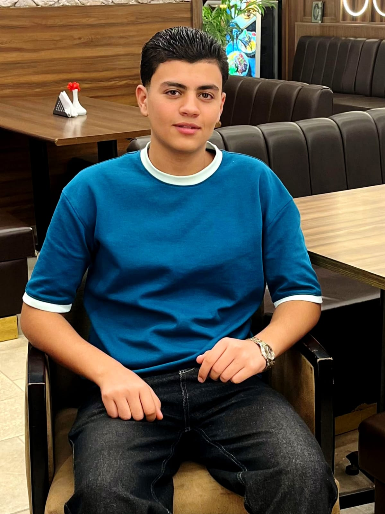

أهلًا، أنا
نبيل ناجي نبيل
طالب بكلية الحاسبات والمعلومات في جامعة الزقازيق. أتعلم تطوير الويب وتطبيقاته وقواعد البيانات، وأبني مشاريع عملية أشاركها هنا.

أتعلم، أجرّب، وأطوّر
مساحة شخصية لعرض رحلتي في الحاسبات والمشاريع التي أعمل عليها.
أنا نبيل ناجي نبيل، طالب بكلية الحاسبات والمعلومات في جامعة الزقازيق. أتعلم تطوير مواقع الويب وتطبيقات الويب وقواعد البيانات، وأسعى إلى تنمية مهاراتي من خلال تنفيذ مشاريع عملية ومشاركة أعمالي.
مهاراتي التقنية
المهارات التالية قيد التعلم والتطوير، وسأحدّثها مع تقدمي ومشاريعي.
مشاريعي
هنا ستظهر المشاريع التي أنجزها، مع وصفها والتقنيات المستخدمة وروابطها.
المشاريع قيد الإعداد
سأضيف مشاريعي هنا عندما تكتمل، لتتمكن من استكشاف كل مشروع وتفاصيله.
الكورسات
سأضيف الكورسات هنا عندما تصبح جاهزة.
لا توجد كورسات منشورة حاليًا
ستظهر الكورسات الجديدة هنا بعد نشرها من لوحة الإدارة.
التعليم
كلية الحاسبات والمعلومات
جامعة الزقازيق
الشهادات والخبرات
ستظهر الشهادات والخبرات التي أضيفها لاحقًا.
المقالات والشروحات
مساحة لمشاركة ما أتعلمه وملاحظاتي.
الفيديوهات
ستظهر الفيديوهات التي أضيفها هنا.
الخدمات
الخدمات التي أضيفها ستظهر هنا.
الخبرات
ستظهر الخبرات التي أضيفها هنا.
هل لديك فكرة أو فرصة؟
يسعدني التواصل بشأن التدريب أو العمل أو التعاون على مشروع.